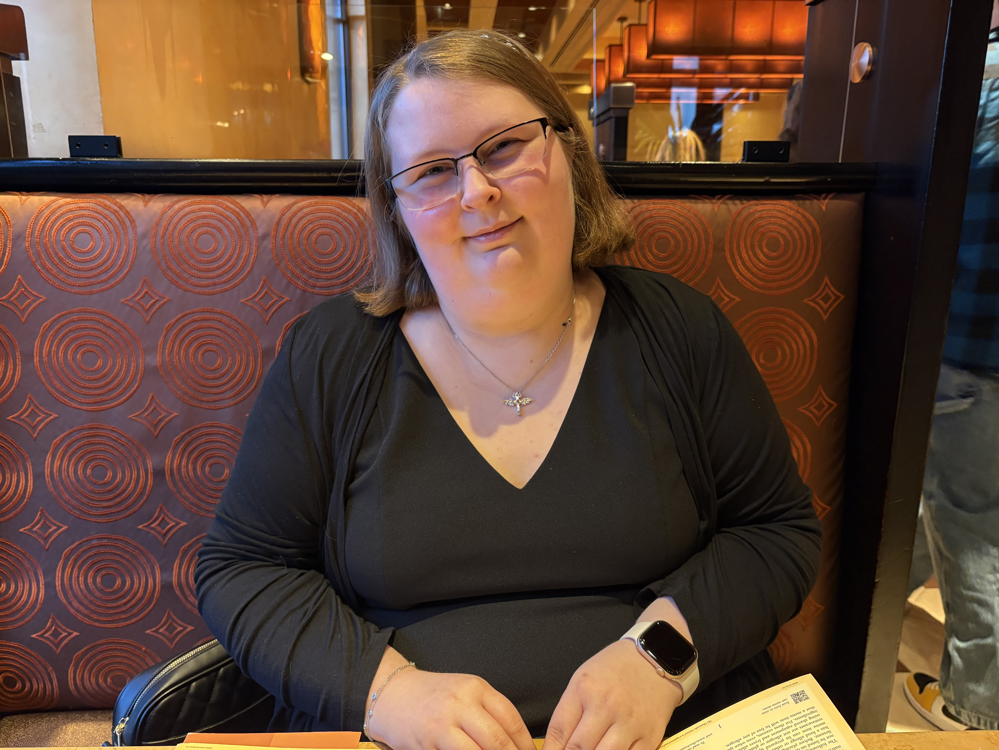

Emily Henderson
Creating the look and feel of Budgie. Emily created the UI and gave our mascot Budgie their calm and confident personality!
Tim Templeton
Tim Templeton has worked in communications electronics for over 35 years and has specialized in fiber optic communications systems design and construction since 1990. He holds emeritus certifications in broadband technology from the Society of Cable Telecommunications Engineers (SCTE) and received an Associate degree in Engineering from the Metropolitan Community Colleges (Kansas City) in 1995 as well as completing coursework in business, electrical engineering and computer engineering at Texas A&M – Kingsville, Texas A&M – Corpus Christi and the University of Kansas. Tim started his career in communications electronics in the U S Marine Corps, specializing as a technician for anti-tank missile systems. Tim is an active SCTE member since 1989, was elevated to Senior Member in 1998 and served as a Board Member and President of the Heart of America and Mount Rainier SCTE chapters. During his career, he was responsible for fiber backbone and distribution design and Fiber-To-The-Home (FTTH) architectures for Time Warner Cable’s Kansas City division and Sunflower Broadband in Lawrence, Kansas. He also served as Geographic Information Systems (GIS) and database administrator for design systems for both systems. His fiber optic experience also involves projects for AlasConnect in Fairbanks, Alaska, the Kansas City Scout system and others. Tim served on the University of Kansas’ Information and Telecommunications Technology Center Industry Advisory Board and has been a member of the Society of Broadcast Engineers and the Institute of Electrical and Electronics Engineers. He also has extensive experience in video and voice over IP networks as well as telecommunications center design, construction and operation and wireless access networks. Tim has published articles in return path design and operation and GIS for cable system operators and has given technical lectures across North America and Asia. Tim currently resides in the Kansas City area and enjoys writing and performing music. LinkedIn
Zharinna Subido
The guardian of data. Expert in relational database management, triggers, and ensuring that every transaction is securely and accurately recorded.

Halena Aquino-Dunkin
Keeping the "Budgie Cage" locked tight. Focused on user authentication, API security, and protecting the private financial lives of our community.